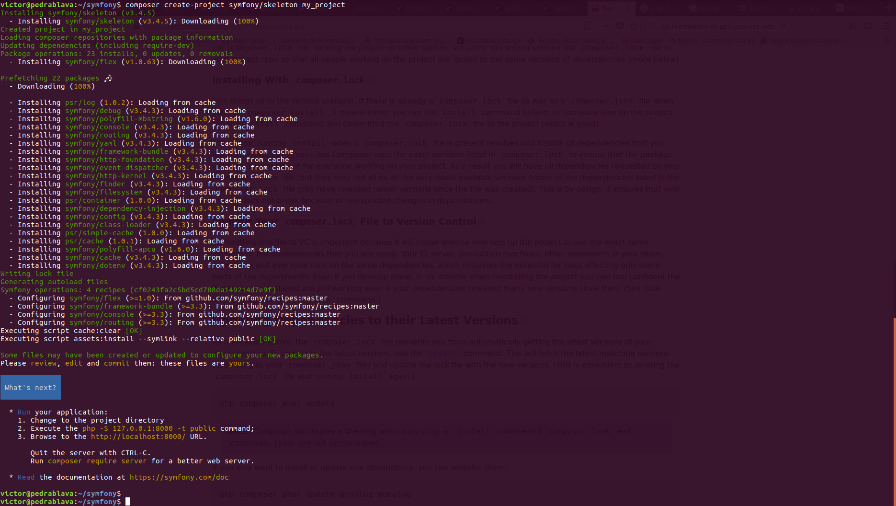
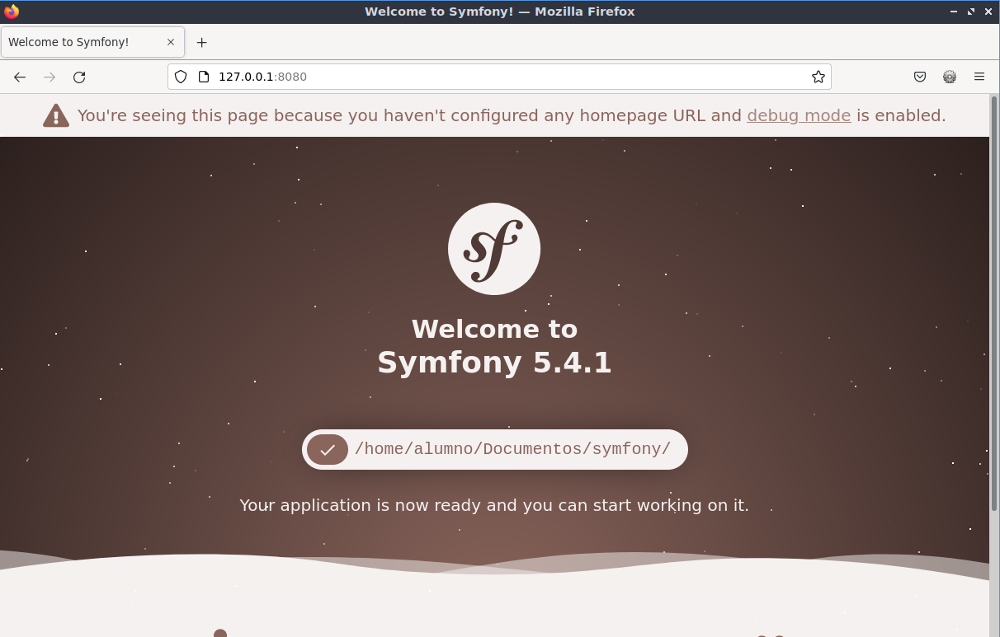
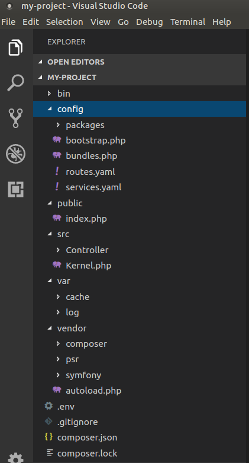
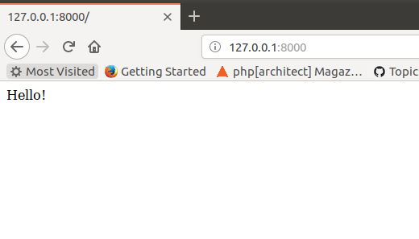
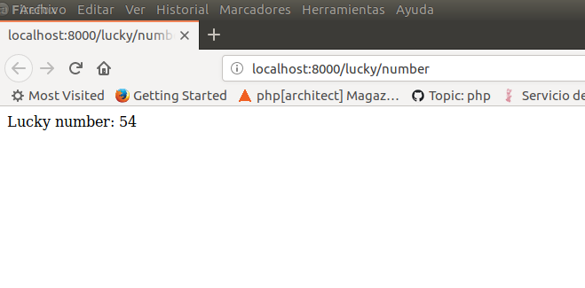
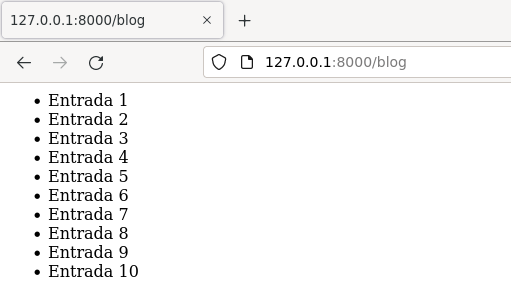
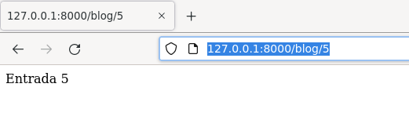

1. Instalación de Symfony y primeros pasos
Symfony es un framework PHP para desarrollo de aplicaciones web así como un conjunto de componentes PHP para usar en tus proyectos.
Hasta ahora, hemos desarrollado todo nuestro código partiendo sólo de las herramientas que provee la librería PHP estándar: sesiones, headers, http request y response, bases de datos, redirecciones, urls limpias, etc. Hemos creado, además, nuestro propio patrón MVC para separar la lógica de negocio, de la vista (presentación) y del controlador y finalmente hemos usado el microframework Slim.
Symfony, y cualquier otro framework PHP, nos ayuda a trabajar con todas estas cuestiones de una manera más sencilla y profesional, permitiendo definir nuestra aplicación a través de controladores.
Para comprobar esta diferencias, visitad la página Symfony versus flat PHP
1.1 Instalar Symfony
Es tan sencillo como ejecutar el siguiente comando
xxxxxxxxxx
$ composer create-project symfony/skeleton my_project

Este comando crea un nuevo proyecto symfony en la carpeta my_project
Para poder servirlo como una aplicación web, usamos el propio servidor web incorporado en PHP.
xxxxxxxxxx
$ cd my_project
$ php -S 127.0.0.1:8000 -t public
Este último comando hace que el Document Root del servidor incorporado en PHP sea el directorio public, que es donde reside index.php y aquí empieza todo!
El directorio
publices el hogar de todos los archivos públicos y estáticos de la aplicación, incluidas imágenes, hojas de estilo y archivos JavaScript. También es donde vive el controlador frontal (index.php).

Si abres el proyecto con Visual Studio Code, verás la siguiente estructura

GIT
Podéis crearos un repositorio en git para esta práctica
1.2 Primeros pasos
Antes que nada, vamos a analizar el archivo index.php
xxxxxxxxxx
<?php
use App\Kernel;
require_once dirname(__DIR__).'/vendor/autoload_runtime.php';
return function (array $context) {
return new Kernel($context['APP_ENV'], (bool) $context['APP_DEBUG']);
};
Es un poco extraño, ¿no?. Pero no nos hemos de preocupar porque este archivo no vamos a modificarlo nunca.
1.2.3 Vamos a ver algunos ejemplos básicos.
La página por defecto home (/) de Symfony es "Welcome to Symfony", porque todavía no hemos configurado ninguna ruta para que nos devuelva otro contenido. El proceso de crear una nueva ruta, consta de dos partes: definir la ruta y escribir el controlador asociado a la misma:
En Slim, las rutas se definían en el controlador frontal:
xxxxxxxxxx
$app->get('/', PageController::class . ':home')->setName("home");
Y en Symfony se definen en el archivo config/routes.yaml
#index:
# path: /
# defaults: { _controller: 'App\Controller\DefaultController::index' }
Descomentadlo:
xxxxxxxxxx
index
path/
defaults _controller'App\Controller\DefaultController::index'
Esto define una ruta llamada index para el path / y el controlador que va a tratar la petición en ese path, en este caso el método index de la clase DefaultController
Ahora cread un archivo DefaultController.php en src/Controller/
>> DefaultController.php
x
<?php
namespace App\Controller;
use Symfony\Component\HttpFoundation\Response;
class DefaultController
{
public function index()
{
return new Response('Hello!');
}
}
Si todo va bien, ya tenéis creada la página de inicio de vuestra web.

Vamos a crear una segunda página que muestre un número aleatorio en la ruta /lucky/number. Primero definimos la nueva ruta en config/routes.yaml
x
lucky_number
path/lucky/number
controllerApp\Controller\LuckyControllernumberAction
Y creamos el script php en src/Controller/ con el nombre LuckyController.php
>> LuckyController.php
x
<?php
namespace App\Controller;
use Symfony\Component\HttpFoundation\Response;
class LuckyController
{
public function numberAction()
{
$number = mt_rand(0, 100);
return new Response(
'<html><body>Lucky number: '.$number.'</body></html>'
);
}
}
Si todo va bien, mostrará la siguiente página al visitar la url http://localhost:8000/lucky/number

Ahora vamos a crear dos rutas: una para mostrar un resumen de todas las entradas de blog y otra para mostrar una entrada de blog concreta.
>> routes.yaml
x
blog_list
path/blog
controllerApp\Controller\BlogControllerlist
blog_show
path/blog/entryId
controllerApp\Controller\BlogControllershow
Según estas definiciones de ruta, hemos de crear la clase BlogController con los métodos list y show. La ruta blog_show tiene un parámetro llamado entryid. Este parámetro será pasado por el kernel al método show.
>> BlogController.php
x
<?php
namespace App\Controller;
use Symfony\Component\HttpFoundation\Response;
class BlogController
{
public function list()
{
$content = "<ul>";
for($i = 1; $i <= 10; $i++){
$content .= "<li>Entrada $i </li>";
}
$content .= "</ul>";
return new Response(
"<html><body>$content</body></html>"
);
}
public function show($entryId)
{
return new Response(
'<html><body>Entrada ' . $entryId . '</body></html>'
);
}
}
Si visitamos la página http://127.0.0.1:8000/blog, aparecerá una lista con todas las entradas de blog

Si vistamos la página http://127.0.0.1:8000/blog/5, por ejemplo, aparecerá la entrada de blog con id 5

1.3 Separar la presentación de la lógica
Vamos a usar el motor de plantillas twig usado por Symfony. Primero hemos de instalarlo con composer
x
composer require symfony/twig-bundle
Ahora creamos dos nuevas rutas:
x
blog_list_twig
path/blogtwig
controllerApp\Controller\BlogTwigControllerlist
blog_show_twig
path/blogtwig/entryId
controllerApp\Controller\BlogTwigControllershow
Creamos las plantillas twig
>> templates/blog/entry.html.twig
x
<html><body>Entrada: {{entryId}}</body></html>
>> templates/blog/list.html.twig
x
<html><body>
<ul>
{% for i in range(1, 10) %}
<li>Entrada {{ i }}</li>
{% endfor %}
</ul>
</body></html>
Y creamos un nuevo controlador para que use estas plantillas:
x
<?php
namespace App\Controller;
use Symfony\Bundle\FrameworkBundle\Controller\AbstractController;
class BlogTwigController extends AbstractController
{
public function list()
{
return $this->render('blog/list.html.twig');
}
public function show($entryId)
{
return $this->render('blog/entry.html.twig', array('entryId' => $entryId));
}
}
Más información en
https://symfony.com/at-a-glance
http://symfony.com/doc/current/quick_tour/the_big_picture.html
https://symfony.com/doc/current/page_creation.html
https://symfony.com/doc/current/controller.html